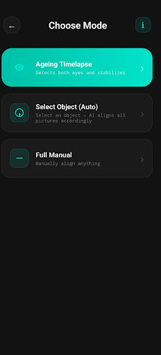
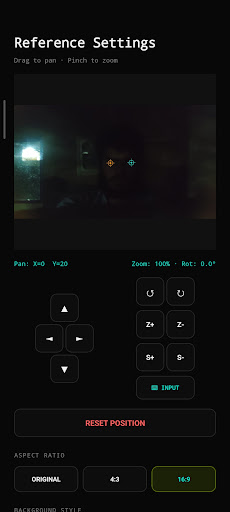
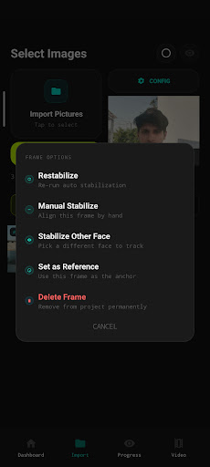

Overview
What it does
FrameLock aligns sequences of photographs rather than stabilising shaky video. Choose a reference frame and it rotates, scales and pans every other image to match — locking onto eyes, onto an object you pick, or under manual control — then renders the result at up to 4K.
Standard video stabilisers assume the input is a moving camera. A photo sequence is a different problem: the frames may have been taken days, weeks or years apart, from slightly different positions, in different light. FrameLock matches on specific features — eye positions, or the keypoints of one chosen object — instead of generic motion, which is what makes the ageing timelapse case work.
It suits photo-a-day projects, locked-on object videos, travel and landmark sequences, and documenting the growth of children or pets.
Stabilisation modes
Three ways to lock on
-
01
Ageing Timelapse — AI face lock
Facial landmark detection identifies eye positions and aligns each image to the reference face. If the wrong person is picked in a crowded shot, the tracked face can be re-selected manually.
-
02
Select Object — auto-tracking
SIFT feature matching fingerprints the selected object and locates it in every following frame, even when lighting or surroundings change. A custom region of interest narrows the match to exactly what matters.
-
03
Full Manual alignment
A virtual D-pad gives precise panning, fine rotation and incremental scaling, with a difference blend overlay that highlights misalignment in real time until the matching areas turn black.
Features
Output and project handling
-
04
4K export quality
Render the finished timelapse in 4K, Full HD, or the original photo resolution.
-
05
Custom frame rates
Choose anything from a slow, cinematic 1 FPS up to 60 FPS, or enter a custom value up to 240 FPS for ultra-smooth playback.
-
06
Background and aspect control
Fill the frame with solid black, a blurred-edge look, or transparency for further editing, and export at 16:9, 4:3, or the original photo ratio.
-
07
Project management
Track several timelapses at once, with a dashboard showing the day streak and total frame count for each project. Import whole folders in bulk or pick individual photos.
Screenshots
In the app
Swipe or scroll the strip to see more


